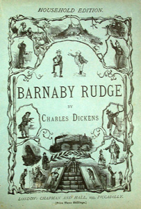

Both Edward's father, John Chester, and Emma's uncle, the Catholic Geoffrey Haredale - both sworn enemies - oppose their union after Sir John untruthfully convinces Geoffrey that Edward's intentions are dishonourable. Sir John intends to marry Edward to a woman with a rich inheritance, to support John's expensive lifestyle and to pay off his debtors. Edward quarrels with his father and leaves home for the West Indies.
Barnaby Rudge, a simpleton, wanders in and out of the story with his pet raven, Grip. Barnaby's mother begins to receive visits from the ill-kempt stranger, whom she feels compelled to protect. She later gives up the annuity she had been receiving from Geoffrey Haredale and, without explanation, takes Barnaby and leaves the city hoping to escape the unwanted visitor.
When Barnaby and his mother arrive at Westminster Bridge they see an unruly crowd heading for a meeting on the Surrey side of the river. Barnaby is duped into joining them, despite his mother's pleas. The rioters then march on Parliament, and burn several Catholic churches and the homes of Catholic families.
A detachment led by Hugh and Dennis head for Chigwell, intent on exacting revenge on Geoffrey Haredale, leaving Barnaby to guard The Boot, the tavern they use as their headquarters. The mob loots the Maypole on their way to the Warren, which they burn to the ground. Emma Haredale and Dolly Varden (now Emma's companion) are taken captive by the rioters. Barnaby is taken prisoner by soldiers and held in Newgate, which the mob plans to storm.
The one-armed man turns out to be Joe Willet, who has returned from fighting against the American revolutionaries. Joe and Edward Chester turn out to be the rescuers of Gabriel Varden. The pair then rescue Dolly and Emma.
Dennis is arrested and sentenced to die with Hugh and Barnaby. Hugh and Dennis are hanged. Barnaby, through the efforts of Gabriel Varden, is pardoned.
Joe and Dolly are married and become proprietors of the rebuilt Maypole. Edward Chester and Emma are married and go to the West Indies. Miggs tries to get her position back at the Varden household, is rejected, and becomes a jailer at a women's prison. Simon Tappertit, his legs crushed in the riots, becomes a shoe-black. Gashford later commits suicide. Lord George Gordon is held in the Tower and is later judged to be innocent of inciting the riots. Sir John Chester, now a member of parliament, turns out to be the father of Hugh and is killed in a duel by Geoffrey Haredale. Haredale escapes to the continent where he ends his days in a monastery. Barnaby and his mother live out their years tending a farm at the Maypole Inn where Barnaby can work effectively due to his physical strength.
1854 - Barnaby Rudge, adaptation into a three-act play by Thomas Higgie.
1875 - Barnaby Rudge, adaptation into another play by Charles Selby and Charles Melville. The latter was produced at the English Opera House.
1915 - Barnaby Rudge, film version directed by Thomas Bentley, "the biggest-budget British film of its day", but it is now lost.
1960 - Barnaby Rudge, a 13 episode BBC TV series starring John Wood, Barbara Hicks and Joan Hickson.
2012 - The Locksmith of London, re-invention as a stage play by Eileen Norris, staged at the Kings Theatre, Southsea by Alchemy Theatre, where the Dickens Fellowship attended a performance during their annual conference.
2014 - Barnaby Rudge, BBC Radio 4 adaptation for their Classic Serial in 2014, and cast an actor with Down's Syndrome, Daniel Laurie, in the title role.